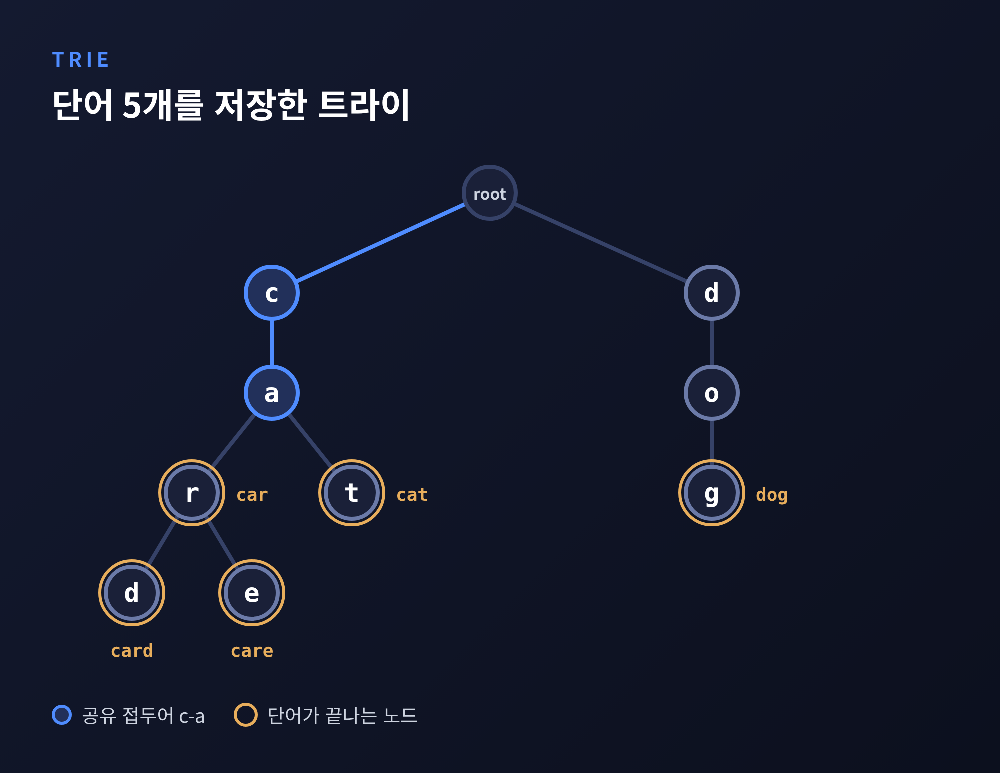
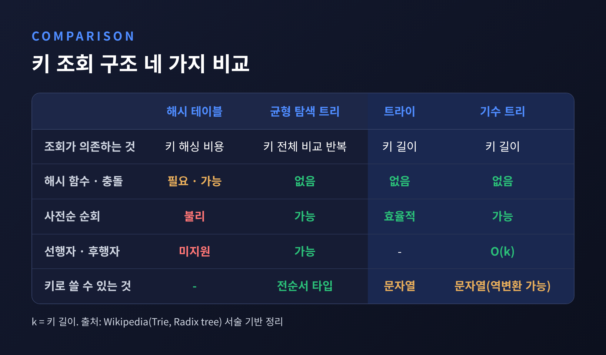
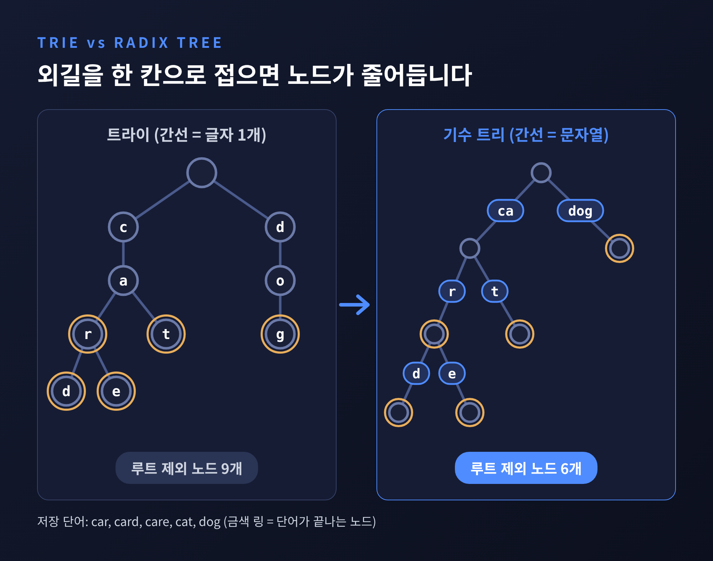
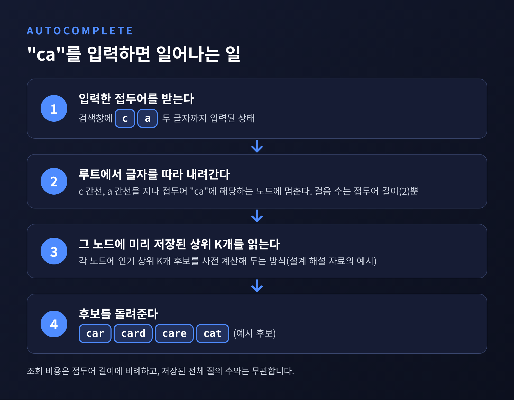
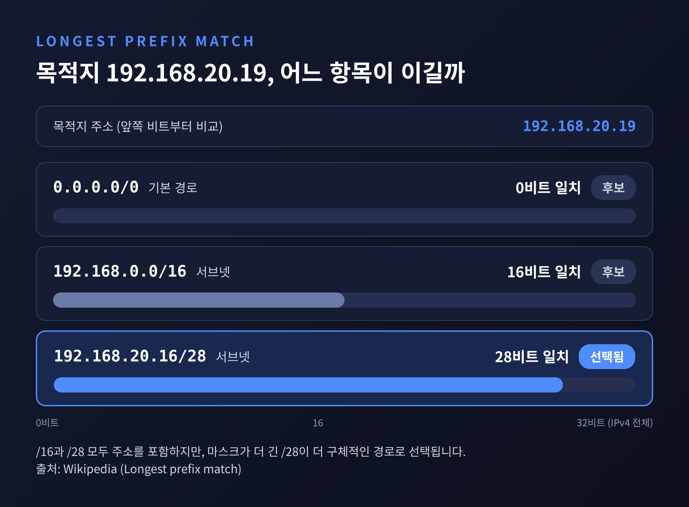
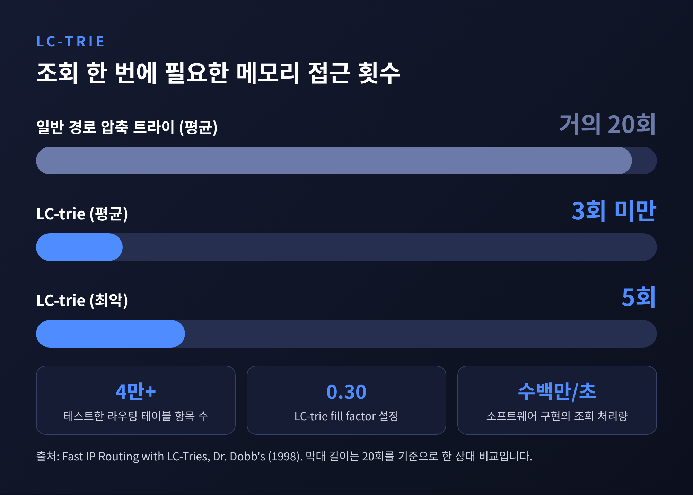

트라이와 기수 트리 원리, 접두어 검색부터 IP 최장 접두사 일치까지

이번 글에서는 트라이(Trie)와 기수 트리(Radix Tree)의 원리를 정리해 보겠습니다.
세 줄로 먼저 답을 드립니다. 트라이는 문자열을 한 글자씩 나누어 길로 저장하기 때문에 검색 시간이 저장된 키의 개수가 아니라 키의 길이에 좌우됩니다. 기수 트리는 그 길을 압축한 구조이고, 자동완성의 접두어 검색과 라우터의 최장 접두사 일치(Longest Prefix Match)가 모두 이 구조 위에서 가능해집니다.
■ 트라이는 키를 저장하지 않고 길을 저장합니다
트라이는 문자열 집합을 저장하고 조회하는 탐색 트리입니다. 접두어 트리, 디지털 트리라고도 부릅니다.
이진 탐색 트리와 가장 다른 점은 노드가 키를 들고 있지 않다는 것입니다. 노드의 위치가 곧 키를 결정합니다. 루트는 빈 문자열이고, 간선 하나가 문자 하나에 해당합니다. 어떤 노드의 자식은 모두 부모와 같은 접두어를 공유합니다.
car, card, care, cat, dog 다섯 단어를 넣으면 아래와 같은 모양이 됩니다.

c와 a는 네 단어가 함께 씁니다. 저장 공간이 줄어드는 이유가 여기에 있습니다. 짧은 문자열이 많을수록 공유되는 접두어도 많아지기 때문입니다.
동작은 단순합니다. 검색은 키의 문자를 따라 내려가다가 연결이 없는 지점을 만나면 "없음"으로 끝납니다. 삽입은 경로에 빠진 노드를 만들고 마지막 노드에 값을 답니다. 삭제는 값을 지운 뒤, 자식도 값도 없는 노드를 거슬러 올라가며 정리합니다.
핵심은 비용입니다. 균형 이진 탐색 트리는 키 전체를 비교하는 일을 여러 번 해야 하지만, 트라이는 키의 길이만큼만 내려가면 됩니다. 단어가 천 개든 천만 개든 "card"를 찾는 데 네 걸음입니다.
해시 테이블과 비교하면 성격이 더 분명해집니다.

트라이는 해시 함수가 필요 없고 키 충돌도 없습니다. 키를 사전순으로 효율 좋게 순회할 수 있는 점도 해시 테이블에는 없는 장점입니다. 다만 대가가 있습니다. 노드마다 알파벳 크기만큼 링크를 두는 단순한 구현은 메모리를 많이 씁니다. ASCII만 해도 노드 하나에 128칸이고, 그중 대부분이 비어 있습니다. 디스크처럼 느린 저장장치에 직접 올려 쓰는 경우에도 해시 테이블보다 불리합니다.
■ 기수 트리는 외길을 한 칸으로 접습니다
위 그림에는 자식이 하나뿐인 노드가 줄지어 있는 곳이 있습니다. a 다음의 r, 그리고 dog의 d-o-g가 그렇습니다. 이 외길을 접은 것이 기수 트리입니다. 압축 트라이라고도 부릅니다.
정의는 이렇습니다. 자식이 하나뿐인 노드를 부모와 합치고, 간선에 글자 하나 대신 문자열을 붙입니다. 위의 다섯 단어를 기수 트리로 바꾸면 루트를 빼고 센 노드가 아홉 개에서 여섯 개로 줄어듭니다.

간선의 문자열은 원본 문자열의 시작과 끝, 포인터 두 개만으로 표현할 수 있어서 라벨이 길어져도 저장 크기가 일정합니다.
삽입과 삭제도 이 압축을 유지하도록 움직입니다.
삽입할 때는 더 갈 수 없는 지점까지 내려간 뒤, 남은 글자로 새 간선을 달거나 공유 접두어에서 기존 간선을 쪼갭니다. 예를 들어 "ca" 간선 아래에 "cab"를 넣으면 "r" 간선과 나란히 "b" 간선이 생깁니다. 삭제할 때는 리프를 지우고, 부모에 자식이 하나만 남으면 그 라벨을 부모에 합칩니다.
조회, 삽입, 삭제, 접두어 검색은 모두 키 길이에 비례하는 시간이 듭니다. 최악의 경우에도 마찬가지입니다.
기수 트리라는 이름이 붙은 배경도 짚어 둘 만합니다. 1968년 Donald R. Morrison이 이 구조를 발명했고, Gernot Gwehenberger가 독립적으로 같은 구조를 만들었다고 전해집니다. Morrison의 변종은 PATRICIA(Practical Algorithm to Retrieve Information Coded in Alphanumeric)라는 이름이 붙었습니다. 키를 비트 단위로 보는 이진 버전이며, 노드마다 하위 트리가 처음 갈라지는 비트 위치만 저장합니다. 그래서 고유 키마다 노드가 하나면 충분합니다. 대신 건너뛴 비트가 실제로 일치하는지는 마지막에 전체 키를 비교해서 확인해야 합니다.
한계도 분명합니다. 기수 트리는 문자열, 또는 문자열로 되돌릴 수 있는 키에만 쓸 수 있습니다. 대소 비교만 되면 쓸 수 있는 균형 탐색 트리와는 적용 범위가 다릅니다. 용어의 구분도 자료마다 조금씩 달라서, 이 글에서는 기수 트리를 압축 트라이와 같은 뜻으로, PATRICIA를 그 이진 버전으로 정리했습니다.
■ 자동완성: 접두어에서 멈추면 후보가 보입니다
검색창에 "ca"까지만 입력했다고 해 보겠습니다. 트라이는 루트에서 c, a를 따라 내려가 그 지점에 멈춥니다. 그 노드 아래에 달린 모든 단어가 "ca"로 시작하는 단어입니다. 접두어 검색이 곧 한 노드를 찾는 일이 되는 셈입니다.
다만 후보를 전부 순회하면 자주 입력되는 접두어에서 느려집니다. 한 시스템 설계 해설 자료는 각 노드에 인기 순위 상위 K개를 미리 계산해 두는 방식을 소개합니다. 이렇게 하면 조회 비용은 접두어 길이에 비례할 뿐 전체 질의 수와 무관해집니다.

운영 방식에 대한 설명도 곁들이겠습니다. 아래 수치는 학습용 설계 해설에 나오는 예시이며, 특정 서비스의 실제 구현이라는 뜻은 아닙니다.
- 트라이는 질의가 들어올 때마다 고치지 않고, 시간 단위나 하루 단위로 오프라인에서 다시 만든 뒤 한꺼번에 교체합니다.
- 급상승 검색어는 작은 별도 트라이를 실시간으로 갱신해 결과를 합칩니다.
- 사용자가 입력을 멈춘 뒤 100~200ms 기다렸다가 요청하면 요청량을 60~80% 줄일 수 있다고 합니다.
- 고유 질의 1억 개 규모의 트라이는 구현에 따라 대략 10~50GB가 든다고 설명합니다.
마지막 항목이 현실적인 부담을 보여 줍니다. 자동완성의 빠름은 공짜가 아니라 메모리와 맞바꾼 결과입니다.
■ IP 라우팅: 가장 구체적인 길이 이깁니다
라우터는 패킷을 받을 때마다 목적지 주소로 다음 경로를 골라야 합니다. 라우팅 테이블에는 개별 주소가 아니라 서브넷, 즉 접두어가 들어 있습니다. 그래서 주소 하나가 여러 항목에 동시에 일치할 수 있습니다.
예를 들어 테이블에 192.168.20.16/28과 192.168.0.0/16이 있고 목적지가 192.168.20.19라면 두 항목이 모두 일치합니다. 이때 마스크가 더 긴 /28이 선택됩니다. 목적지 주소의 앞쪽 비트와 더 많이 일치하는, 가장 구체적인 항목이기 때문입니다. 아무 항목에도 맞지 않으면 접두어 길이가 가장 짧은 기본 경로가 쓰입니다. 이것이 최장 접두사 일치입니다.

이 규칙은 1993년 9월의 RFC 1519(CIDR)에 "모든 목적지로의 라우팅은 최장 일치 방식으로만 이루어져야 한다"는 취지로 명시되었습니다. 당시 문제는 클래스 B 주소의 고갈과 라우팅 테이블의 증가였습니다. 1992년 12월 광고된 경로가 8,561개였고, 대책이 없으면 3년 안에 약 75,000개까지 늘 것으로 추정했습니다.
예전엔 8천여 개였던 표가, 지금은 100만 개를 넘었습니다. 2025년 5월 한 에지 네트워크의 BGP 세션 기준으로 IPv4 접두어는 1,001,332개, IPv6는 221,004개였습니다. 하루 업데이트도 IPv4만 722,489건에 이릅니다. 전 세계 전체 표가 아니라 한 세션에서 관측한 값이라는 점은 밝혀 둡니다.
이제 트라이가 등장할 차례입니다. IP 주소를 비트열로 보면, 접두어는 그 비트열의 앞부분입니다. 비트 하나를 간선으로 삼는 이진 트라이에 접두어를 저장해 두고, 목적지 주소의 비트를 따라 내려가면서 지나친 접두어 중 가장 깊은 것을 기억해 두면 됩니다. 길이 끝나는 곳에서 마지막으로 기억한 항목이 최장 일치입니다.
class Node:
def __init__(self):
self.child = [None, None] # 비트 0, 비트 1
self.route = None # 이 접두어에 대응하는 경로
def insert(root, bits, route): # bits 예: "11000000101010000001010000010"
node = root
for b in bits:
i = int(b)
if node.child[i] is None:
node.child[i] = Node()
node = node.child[i]
node.route = route
def longest_prefix_match(root, addr_bits):
node, best = root, root.route # 길이 0 접두어는 기본 경로
for b in addr_bits:
node = node.child[int(b)]
if node is None:
break
if node.route is not None:
best = node.route # 더 긴 접두어를 만날 때마다 갱신
return best
비교 횟수는 주소 비트 수를 넘지 않습니다. IPv4라면 최대 32번입니다. 저장된 경로가 100만 개든 1,000만 개든 마찬가지입니다. 위 코드는 원리를 보여 주는 예시이고, 실제 라우터는 아래에서 보듯 훨씬 정교한 구조를 씁니다.
■ 실제 구현: 경로 압축과 레벨 압축
비트 하나를 간선으로 쓰는 단순한 이진 트라이는 깊이가 깊어 메모리 접근이 잦습니다. 그래서 기수 트리, 그중에서도 PATRICIA 계열의 경로 압축이 쓰입니다. FreeBSD의 라우팅 코드와 NetBSD의 radix.c가 대표적인 사례로 꼽힙니다.
리눅스 커널은 한 걸음 더 나아가 LC-trie(Level-Compressed trie)로 라우팅 테이블(FIB)을 구현합니다. 1993년 Andersson과 Nilsson이 제안한 구조입니다.
- 경로 압축은 자식이 하나인 노드를 없애고 건너뛸 비트 수(skip)를 저장합니다. 평균 깊이는 키 수 n의 로그에 비례합니다.
- 레벨 압축은 빽빽한 구간의 위쪽 i개 층을 노드 하나로 바꿔 2^i개의 자손을 한 번에 가리킵니다. 평균 깊이가 log log n에 비례해 아주 천천히 늘어납니다.
1998년 소개된 실험이 차이를 보여 줍니다. 항목이 4만 개 이상인 라우팅 테이블에서 일반 경로 압축 트라이는 평균 깊이가 거의 20회 메모리 접근이었습니다. fill factor 0.30의 LC-trie는 평균 3회 미만, 최악 5회였습니다. 소프트웨어 구현만으로 초당 수백만 건을 조회할 수 있다고 했습니다.

리눅스의 조회는 먼저 리프까지 내려갑니다. 일치하는 항목이 없으면 접두어 길이를 하나씩 줄이며 위로 되짚어 올라가 최장 일치를 찾습니다. 건너뛴 비트는 실제로 맞지 않을 수 있어서 리프에 저장된 키와 마지막 비교를 거칩니다. 약점도 있습니다. 노드가 배열에 연속으로 놓이는 구조라 동적 삽입과 삭제가 쉽지 않아, 원 논문의 구현은 몇 초 간격으로 구조를 다시 만드는 방식을 택했습니다. 또 리눅스 구현 문서는 3.2.9 시점의 것이라, 현재 커널의 세부는 다를 수 있다는 점을 감안해 읽으시길 권합니다.
기수 트리는 문자열이 아닌 곳에서도 살아 있습니다. 리눅스 커널은 페이지 캐시에 기수 트리를 오래 써 왔고, Matthew Wilcox는 자료구조는 그대로 둔 채 API를 배열 모양으로 바꿔 XArray로 내놓았습니다. 잠금이 인터페이스에 포함되고 반복이 효율적이라는 이유였습니다. 레디스(Redis)의 Rax도 기수 트리 구현으로, 단일 자식 노드의 연쇄를 하나의 압축 노드로 합쳐 메모리를 아낍니다.
■ 어떤 구조를 고를지 정리하면
- 키를 정확히 한 번 찾는 일이 전부라면 해시 테이블로 충분합니다.
- 접두어로 묶어 찾거나, 사전순으로 훑거나, 가장 긴 일치를 구해야 한다면 트라이 계열이 맞습니다.
- 메모리가 부담이면 기수 트리로 외길을 접고, 키가 비트열이면 PATRICIA나 LC-trie를 떠올리시면 됩니다.
정리하면 이렇습니다. 트라이 계열의 힘은 "찾는 비용이 데이터의 양이 아니라 키의 길이에 달려 있다"는 한 가지 성질에서 나옵니다. 자동완성의 후보 목록도, 라우터의 최장 접두사 일치도 그 성질을 서로 다른 모양으로 활용한 것입니다.
100만 개의 경로 앞에서도 라우터가 머뭇거리지 않는 이유를 물으신다면, 데이터를 훑지 않고 주소의 비트를 따라 걷기 때문이라고 답하겠습니다.